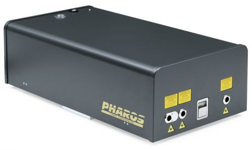
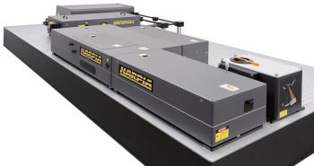

Company profile:
Light Conversion

25 years in femtosecond solutions
Light Conversion
Keramiku 2B
10233 Vilnius
Lithuania
| Tel.: | +370 52 49 18 30 |
| E-mail: | |
| Website: | www.lightcon.com |
| Social media: | Facebook, LinkedIn, YouTube |
| Quality certification: | ISO 9001:2015 |
Company Description
Light Conversion is a leading manufacturer of wavelength tunable femtosecond laser sources based on TOPAS and ORPHEUS series of optical parametric amplifiers (OPA) as well as diode pumped solid state femtosecond lasers PHAROS and CARBIDE. PHAROS, the most versatile femtosecond laser amplifier on the market, and the ultra-compact and cost-efficient CARBIDE feature market-leading output parameters along with robust design attracting industrial and scientific customers. PHAROS reliability has been proven by multiple systems working for years in production lines at 24/7 regime. Main applications include drilling and cutting of different metals, ceramics, sapphire, glass, material ablation for mass-spectrometry, etc. Among the customers are major manufactures in display, automotive, LED, medical device industries and others. Our laser amplifiers are complimented by a strong portfolio of ultrafast products: harmonics modules (provide femtosecond pulses at 515, 343, 257 and 206 nm), OPAs
(produce continuous tuning output from ≈190 nm up to ≈20 μm), HARPIA and CHIMERA spectrometers, TiPA and GECO autocorrelators.
Exhibitions
See us at Laser World of Photonics China 2019 in Shanghai, March 20–22 (booth W2.2701)!
Products
| Product | Description |
|---|---|
| femtosecond lasers |  PHAROS is a femtosecond laser system combining millijoule pulse energies and high average powers. PHAROS features a mechanical and optical design optimized for industrial applications such as precise material processing. Compact size, integrated thermal stabilization system and sealed design allow PHAROS integration into machining workstations. The use of solid state laser diodes for pumping of Yb medium significantly reduces maintenance cost and provides long laser lifetime. Tunable PHAROS parameters include: pulse duration (190 fs – 20 ps), repetition rate (single pulse to 1 MHz), pulse energy (up to 2 mJ) and average power (up to 20 W). Its deliverable power is sufficient for most of material processing applications at high machining speeds. The built-in pulse picker allows convenient control of the laser output in pulse on demand mode. The compact and robust optomechanical design features of PHAROS lead to stable laser operation in varying environments. See also our white paper on Ultrafast Lasers for Industrial and Scientific Applications! |
| spectrometers |  The capabilities of the femtosecond spectroscopy system HARPIA are: - Femtosecond transient absorption / reflection - Femtosecond multi-pulse transient absorption/reflection measurements - Femtosecond fluorescence upconversion - Hundred picoseconds-to-microsecond time-correlated single photon counting (TCSPC) - Automated measurements of intensity dependence of transient absorption and time-resolved fluorescence signal - Time-resolved femtosecond stimulated Raman scattering (FSRS) experiments - Flash photolysis All-inclusive HARPIA system can provide an extensive comprehension of the intricate photophysical and photochemical properties of the investigated samples. Switching between different experimental realizations is fully automated and requires very little user interference. The optical layout of HARPIA system is refined to offer both an incredibly small footprint and an easy and intuitive user experience. HARPIA is easily customizable and can be tailored for specific measurement needs. |
Promotions
Information of Light Conversion Appears on the Following Pages
Company profile (this page)
Pages with Suppliers for Products
femtosecond lasers, spectrometers
Encyclopedia Articles
femtosecond lasers, spectrometers
Profiles of Other Suppliers
Light Conversion is shown as alternative supplier on 73 pages of other suppliers not having an ad package.
Other Pages
The banner which is included in the ad package will randomly appear on various pages.
On various pages, a banner can randomly show up which displays a random selection of logos of suppliers with an ad package.